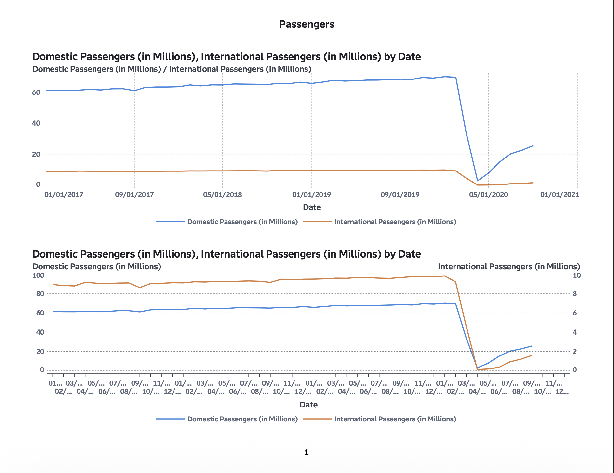
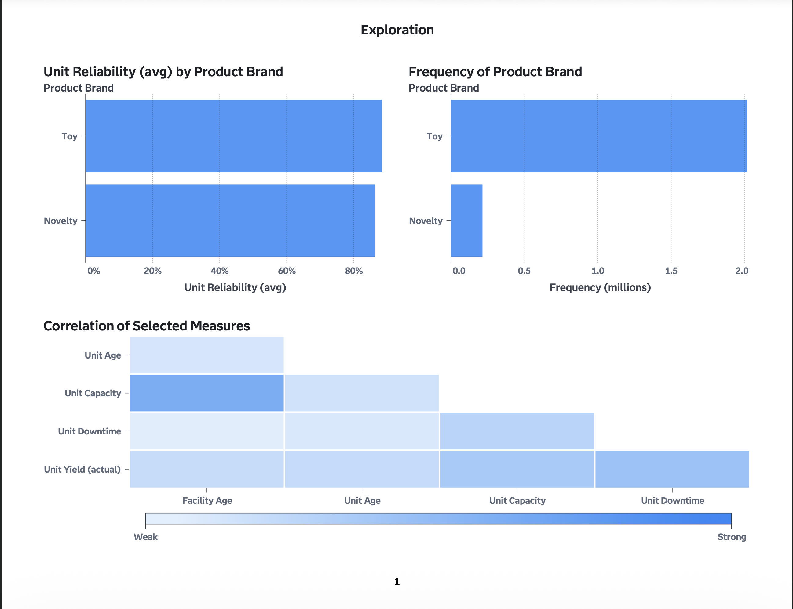

Featured Projects
 Power BI · Healthcare Operations
Power BI · Healthcare OperationsHealthcare Operations & Workforce Analytics Dashboard
Retail Sales Analysis
Problem: Department-level retail records needed consistent store-week summaries for comparison across store types.
Approach: Validated the store join, excluded holiday weeks and aggregated department sales into store-week totals.
Tools: Python, pandas
Outcome: Recomputed average nonholiday store-week sales of $1.370M, $816,922 and $472,742 for Types A, B and C; these are descriptive differences.
Bank Marketing Prediction
Problem: Marketing campaign data needed to be analyzed to better understand which customers were more likely to respond.
Approach: Prepared the dataset, evaluated predictors, and applied machine learning methods to identify customer response patterns.
Tools: Python, pandas, scikit-learn
Outcome: Identified key predictors and created a structured view of customer behavior for decision support.

SAS Viya • Industry TrendsU.S. Aviation Industry Trends Analysis

SAS Viya • Acquisition Analytics